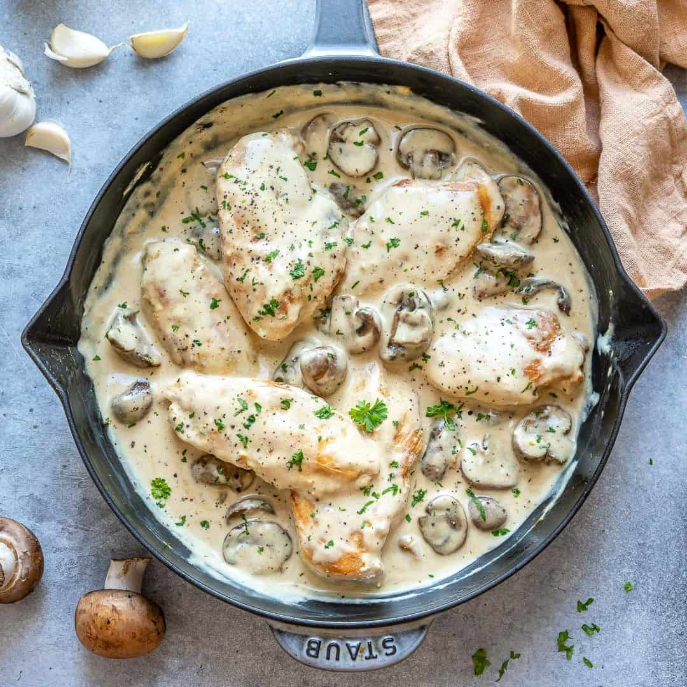

Mushroom Chicken

Description
Mushroom Chicken is ready in just 30 minutes and the sauce will wow the entire family!
You don't have to be a professional to make this dish and that's just one of many reasons we love it so much!
Ingredients
- Chicken
- Flour
- Olive oil and butter
- Mushrooms
- Italian seasoning
- Garlic
- Chicken broth
- Lemon juice
- Dijon mustard
- Heavy cream
Steps
- Cut the chicken breasts in half lengthwise, then coat the cutlets in flour and sear for 4-5 minutes/side in a skillet until golden.
Transfer to a plate, and then sauté the mushrooms.
- Take the mushrooms out of the pan and add the garlic, chicken broth, lemon juice, and Dijon mustard. Let it reduce, and then stir in the cream along with the mushrooms and chicken.
Finish cooking the chicken through, and season with salt & pepper.